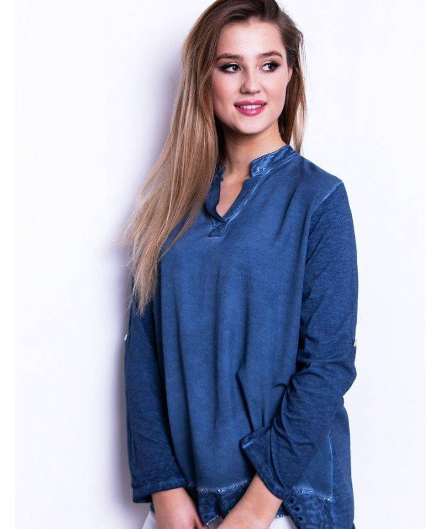
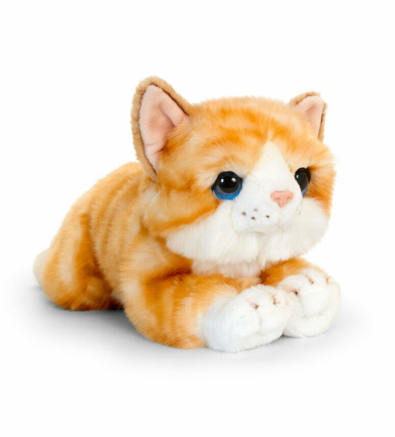

Vyriški drabužiai | Vyriški rūbai | Ypač platus pasirinkimas
 +370 37 350 662 I-V 9:00-18:00 VI 9:00-17:00 VII 9:00-15:00 Prekybos miestelio planas lt en APIE URMĄ
Informacija Lankytojui
APIE URMĄ Naujienos Renginiai Darbo laikas Nedarbo dienos Lojalumo programa Vaistinės Bankomatai Kavinės / restoranai Privatumo politikaTurgūs
Centrinis Kauno turgus Naktinis turgus Tarptautinis senturgis „Laiko ratu” Bagažinių turgusPastatai
Geltonoji galerija Baltoji galerija Rytinė galerija Vakarinė galerija Raudonasis pasažas ,,Urmas station”Aktuali informacija
KONTAKTAI Stilius, mada Maisto klubas Karjera Įgyvendinti projektai Urmo geležinkelio stotis Prekybos miestelio planas Elektromobilių įkrovimo stotelės registracija VERSLUIVerslui
Prekybinių patalpų nuoma Sandėlių nuoma Reklamos paslaugos Kodėl Urmas? Faktai, skaičiai, statistika Lokacija, vieta Urmo radijas KONTAKTAI Menu Skip to content Akcijos Naujienos Turgūs Renginiai Prekių katalogas ParduotuvėsVyriški drabužiai
Pradinis / Katalogas / drabuziai-apranga-rubai / Vyriški drabužiaiPARDUOTUVĖS PAVADINIMAS VIETA PLAČIAU CARIDIO VARDINIAI DRABUŽIAI VAKARINĖ GALERIJA 2 SALĖ, 112 PARDUOTUVĖ PLAČIAU APRANGA VYRAMS VAKARINĖ GALERIJA 8 SALĖ, 43 VIETA PLAČIAU MOTERIŠKI IR VYRIŠKI DRABUŽIAI VAKARINĖ GALERIJA 8 SALĖ, 4 VIETA PLAČIAU VYRIŠKI DRABUŽIAI IR AVALYNĖ VAKARINĖ GALERIJA 6 SALĖ, 78 VIETA PLAČIAU MOTERIŠKI IR VYRIŠKI DRABUŽIAI VAKARINĖ GALERIJA 6 SALĖ, 19 VIETA PLAČIAU VYRIŠKI DRABUŽIAI VAKARINĖ GALERIJA 7 SALĖ, 67 VIETA PLAČIAU VYRIŠKI DŽINSAI VAKARINĖ GALERIJA 9 SALĖ, 77 VIETA PLAČIAU VYRIŠKI DRABUŽIAI IR DŽINSAI VAKARINĖ GALERIJA 8 SALĖ, 81 VIETA PLAČIAU STILINGI MOTERIŠKI IR VYRIŠKI DRABUŽIAI RAUDONASIS PASAŽAS 1 SALĖ, 21A PARDUOTUVĖ PLAČIAU MOTERIŠKI IR VYRIŠKI DRABUŽIAI VAKARINĖ GALERIJA 2 SALĖ, 14 PARDUOTUVĖ PLAČIAU MOTERIŠKI DRABUŽIAI VAKARINĖ GALERIJA 3 SALĖ, 47 VIETA PLAČIAU MOTERIŠKI IR VYRIŠKI DRABUŽIAI VAKARINĖ GALERIJA 4 SALĖ, 36 VIETA PLAČIAU Vyriški drabužiai RYTINĖ GALERIJA 10 SALĖ, 72 vieta PLAČIAU VYRIŠKI DRABUŽIAI VAKARINĖ GALERIJA 6 SALĖ, 37 vieta PLAČIAU VYRIŠKA MADA VAKARINĖ GALERIJA 5 SALĖ, 49 PARDUOTUVĖ PLAČIAU STILINGA APRANGA VYRAMS VAKARINĖ GALERIJA 7 SALĖ, 152 PARDUOTUVĖ PLAČIAU VYRIŠKI DRABUŽIAI VAKARINĖ GALERIJA 6 SALĖ, 50 VIETA PLAČIAU VYRIŠKI KOSTIUMAI VAKARINĖ GALERIJA 4 SALĖ, 67 vieta PLAČIAU Vyriški drabužiai VAKARINĖ GALERIJA 6 SALĖ, 74 VIETA PLAČIAU Vyriški drabužiai VAKARINĖ GALERIJA 7 SALĖ, 77 VIETA PLAČIAU Vyriški drabužiai RYTINĖ GALERIJA 10 SALĖ, 60 VIETA PLAČIAU Vyriški drabužiai VAKARINĖ GALERIJA 8 SALĖ, 39 VIETA PLAČIAU Vyriški drabužiai VAKARINĖ GALERIJA 8 SALĖ, 63 VIETA PLAČIAU MOTERIŠKI , VYRIŠKI IR VAIKIŠKI DRABUŽIAI VAKARINĖ GALERIJA 8 SALĖ, 54 VIETA PLAČIAU VYRIŠKI KOSTIUMAI VAKARINĖ GALERIJA 7 SALĖ, 74 VIETA PLAČIAU VYRIŠKI IR MOTERIŠKI DRABUŽIAI RYTINĖ GALERIJA 10 SALĖ, 41 VIETA PLAČIAU VYRIŠKI DRABUŽIAI VAKARINĖ GALERIJA 3 SALĖ, 44 VIETA PLAČIAU ASIA DRABUŽIAI IR AVALYNĖ VISAI ŠEIMAI VAKARINĖ GALERIJA 4 SALĖ, 2 PARDUOTUVĖ (II AUKŠTAS) PLAČIAU VYRIŠKI DRABUŽIAI IR AVALYNĖ VAKARINĖ GALERIJA 8 SALĖ, 87 PARDUOTUVĖ PLAČIAU LAISVALAIKIO DRABUŽIAI VAKARINĖ GALERIJA 5 SALĖ, 44 PARDUOTUVĖ PLAČIAU VYRIKŠKI DRABUŽIAI VAKARINĖ GALERIJA 5 SALĖ, 42 PARDUOTUVĖ PLAČIAU VYRIŠKI DRABUŽIAI IR AKSESUARAI VAKARINĖ GALERIJA 5 SALĖ, 39 PARDUOTUVĖ PLAČIAU DRABUŽIAI MOTERIMS VAKARINĖ GALERIJA 2 SALĖ, 13 PARDUOTUVĖ PLAČIAU VYRIŠKI KOSTIUMAI VAKARINĖ GALERIJA 7 SALĖ, 26 VIETA PLAČIAU VYRIŠKI KOSTIUMAI IR AKSESUARAI VAKARINĖ GALERIJA 8 SALĖ, 16 VIETA PLAČIAU VYRIŠKI KOSTIUMAI VAKARINĖ GALERIJA 3 SALĖ, 116 PARDUOTUVĖ PLAČIAU VYRIŠKI DRABUŽIAI VAKARINĖ GALERIJA 8 SALĖ, 13 VIETA PLAČIAU VYRIŠKI KOSTIUMAI IR AKSESUARAI VAKARINĖ GALERIJA 6 SALĖ, 142 PARDUOTUVĖ PLAČIAU DŽINSAI VAKARINĖ GALERIJA 6 SALĖ, 81 VIETA PLAČIAU MOTERIŠKI IR VYRIŠKI DRABUŽIAI VAKARINĖ GALERIJA 6 SALĖ, 76 VIETA PLAČIAU VYRIŠKI DRABUŽIAI VAKARINĖ GALERIJA 8 SALĖ, 7 VIETA PLAČIAU VYRIŠKI KOSTIUMAI IR AKSESUARAI VAKARINĖ GALERIJA 6 SALĖ, 58 VIETA PLAČIAU VYRIŠKI DRABUŽIAI VAKARINĖ GALERIJA 6 SALĖ, 44 VIETA PLAČIAU DŽINSINĖ APRANGA VYRAMS VAKARINĖ GALERIJA 7 SALĖ, 90 PARDUOTUVĖ PLAČIAU VYRIŠKA IR MOTERIŠKA APRANGA RYTINĖ GALERIJA 10 SALĖ, 67 VIETA PLAČIAU VYRIŠKI KOSTIUMAI IR AKSESUARAI RYTINĖ GALERIJA 10 SALĖ, 95 VIETA PLAČIAU VYRIŠKI KOSTIUMAI IR AKSESUARAI RYTINĖ GALERIJA 10 SALĖ, 66 VIETA PLAČIAU KOSTIUMAI IR AKSESUARAI RYTINĖ GALERIJA 10 SALĖ, 49 VIETA PLAČIAU STILINGA APRANGA VYRAMS VAKARINĖ GALERIJA 7 SALĖ, 150 PARDUOTUVĖ PLAČIAU VYRIŠKI DRABUŽIAI VAKARINĖ GALERIJA 7 SALĖ, 19 VIETA PLAČIAU MOTERIŠKI IR VYRIŠKI DRABUŽIAI VAKARINĖ GALERIJA 7 SALĖ, 21 VIETA PLAČIAU VYRIŠKI DRABUŽIAI RYTINĖ GALERIJA 10 SALĖ, 36 VIETA PLAČIAU MOTERIŠKA IR VYRIŠKA APRANGA RYTINĖ GALERIJA 10 SALĖ, 83 VIETA PLAČIAU MOTERIŠKA IR VYRIŠKA LAISVALAIKIO APRANGA RYTINĖ GALERIJA 10 SALĖ, 6 VIETA PLAČIAU VYRIŠKA APRANGA VAKARINĖ GALERIJA 1 SALĖ, 4 PARDUOTUVĖ PLAČIAU DRABUŽIAI VYRAMS VAKARINĖ GALERIJA 3 SALĖ, 19 VIETA PLAČIAU DRABUŽIAI VYRAMS VAKARINĖ GALERIJA 3 SALĖ, 71 VIETA PLAČIAU S. LOŽKINO FIRMA „ASERDA“ GELTONOJI GALERIJA 4 SALĖ, 2 PARDUOTUVĖ PLAČIAU ASORTIMENT IŠPARDUOTUVĖ RYTINĖ GALERIJA 17 SALĖ, 22 PARDUOTUVĖ PLAČIAU MOTERIŠKI IR VYRIŠKI DRABUŽIAI VAKARINĖ GALERIJA 4 SALĖ, 37 VIETA PLAČIAU MOTERIŠKI IR VYRIŠKI RŪBAI. DŽINSAI VAKARINĖ GALERIJA 4 SALĖ, 34 VIETA PLAČIAU MOTERIŠKA APRANGA GELTONOJI GALERIJA 6 SALĖ, 20 PARDUOTUVĖ PLAČIAU ALVYROS DŽINSAI GELTONOJI GALERIJA 5 SALĖ, 5A PARDUOTUVĖ PLAČIAU TOPMIX IŠPARDUOTUVĖ RYTINĖ GALERIJA 16 SALĖ, 13 PARDUOTUVĖ PLAČIAU VYRIŠKI KOSTIUMAI IR NE TIK RAUDONASIS PASAŽAS 2 SALĖ, 14B PARDUOTUVĖ PLAČIAU VYRIŠKA APRANGA IR AVALYNĖ RAUDONASIS PASAŽAS 1 SALĖ, 3 PARDUOTUVĖ PLAČIAU VYRIŠKI DRABUŽIAI RAUDONASIS PASAŽAS 1 SALĖ, 2 PARDUOTUVĖ PLAČIAU DAGINA RAUDONASIS PASAŽAS 2 SALĖ, 18 PARDUOTUVĖ PLAČIAU MOTERIŠKI IR VYRIŠKI DRABUŽIAI RAUDONASIS PASAŽAS 2 SALĖ, 10A VIETA PLAČIAU KOSTIUMAI VYRAMS VAKARINĖ GALERIJA 2 SALĖ, 8C PARDUOTUVĖ PLAČIAU VISKAS TIKRIEMS VYRAMS VAKARINĖ GALERIJA 2 SALĖ, 17 PARDUOTUVĖ PLAČIAU DAGINA VAKARINĖ GALERIJA 2 SALĖ, 11 PARDUOTUVĖ PLAČIAU VYRIŠKI IR MOTERIŠKI DRABUŽIAI VAKARINĖ GALERIJA 2 SALĖ, 9 PARDUOTUVĖ PLAČIAU VYRIŠKI DRABUŽIAI VAKARINĖ GALERIJA 2 SALĖ, 7A PARDUOTUVĖ PLAČIAU DAGINA VAKARINĖ GALERIJA 1 SALĖ, 13B PARDUOTUVĖ PLAČIAU MOTERIŠKI IR VYRIŠKI DRABUŽIAI VAKARINĖ GALERIJA 1 SALĖ, 5 PARDUOTUVĖ PLAČIAU
Prekybos miestelyje „Urmas“ parduodami įvairūs drabužiai vyrams: parduotuvėse galite rasti ne tik pasirinkimų laisvalaikiui ar darbui, bet ir specialioms progoms. Galėsite pasirinkti drabužius atitinkamai pagal paskirtį, amžių: asortimente yra ir vyriški kostiumai, skirti tiek darbui, tiek vestuvėms. Atvykite ir pasirinkite geriausiai Jums tinkančius drabužius.
Platus pasirinkimas
Jūsų laukia visa įvairovė stilingos vyriškos aprangos, tad tikrai lengvai išsirinksite, kokie vyriški drabužiai Jums tiks geriausiai ne tik pagal dydį, spalvą, bet ir pagal paskirtį:
reikia kiek oficialesnių drabužių? Įvairūs kostiumai vyrams Kaune parduodami geromis kainomis; ruošiatės į darbą ar mokyklą? Tiek vienspalviai, tiek raštuoti marškiniai vyrams Kaune randami daugelyje prekybos vietų, išsidėsčiusių įvairiose prekybos miestelio galerijose. Pasirinkimų yra tiek daug, kad lengvai rasite marškinius visų kūno formų vyrams; prekybos miestelyje URMAS taip pat gausu specializuotų džinsų parduotuvių; galerijose yra ir įvairūs sportinio stiliaus, tiek vasariniai, tiek žieminiai vyriški drabužiai; rasite ir reikiamus aksesuarus: pardavėjai patars, kokie marškiniai, kaklaraištis, diržas, varlytė, petnešos labiausiai tiks prie kostiumo; kiekvienam vyrui praverčia ir laisvo stiliaus švarkas, kurį galima priderinti prie kitos spalvos kelnių ar net prie džinsų, o po švarku vilkėti megztinį; rasite ir daug variantų, kaip stilingai atrodyti keičiantis sezonams: sezoniniai drabužiai vyrams turi įvairių modelių, tad pas mus yra iš ko rinktis tiek jaunuoliui, tiek ir nuo mados nenorintiems atsilikti brandaus amžiaus vyrams; sportinio stiliaus drabužių skyriuose rasite ir marškinėlių su Lietuvos atributika.Asortimentas tikrai gausus – svarbu tinkamai išsirinkti, kurie vyriški drabužiai tiks būtent Jums.
Kaip išsirinkti?
Sunkiausia, atvykus į prekybos miestelį URMAS, pasirinkti, kur rasti reikalingus rūbus. Tačiau pardavimo vietų sąrašą rasite mūsų svetainėje – tai padės sutaupyti laiko, ieškant marškinių, batų ar kitų reikalingų pirkinių.
Rinkdamiesi vyriškus drabužius, atkreipkite dėmesį į šiuos veiksnius:
sezoną. Kuriam sezonui ieškote drabužių? Tai padiktuos, ar geriau dairytis marškinėlių trumpomis rankovėmis, o gal sukti į kailinių skyrių; progą. Ar ieškote drabužių, kuriuos vilkėsite kasdien, ar ketinate dalyvauti svarbiame renginyje? Čia rasite ir džemperių, ir megztinių, po kuriais nebūtina vilkėti marškinių, ir prabangių kostiumų. Įvairūs vyriški kostiumai skirti tiek dėvėjimui darbe, tiek įmonės renginiui ar kitai svarbiai progai; medžiagą. Drabužiai vyrams siuvami ne tik iš natūralių, bet ir sintetinių audinių. Medžiagas priderinkite pagal sezoną: žiemą verčiau rinktis vilną, vasarą – medvilnę; spalvą ir raštą. Siūlomų drabužių yra ir neutralių atspalvių, ir ryškiaspalvių. Vyrai, ir ne tik jauni, dabar nevengia išsiskirti iš kitų, drąsiai vilki raudonos, geltonos ar kt. ryškios spalvos megztinius; atributus. Vyriški drabužiai taip pat gali būti su įvairiais atributais. Tokios smulkmenos, kaip įmantresnis marškinių kišenės užsegimas, įdomesnė rankogalių forma suteikia drabužiui originalumo. funkcionalumą. Prekybos miestelyje rasite ir drabužių, kurie gali turėti kelias funkcijas, pavyzdžiui, dviejų pusių striukė ar kelių paskirčių kelnės, kurias atsegus lieka bridžai ar šortai.Gerų patarimų, kaip rengtis šį sezoną, kokie kostiumai vyrams Kaune populiariausi, galite tikėtis užsukę į prekybos miestelį „Urmas“. Pasiūla čia tokia, kad sau tinkamų modelių išsirinks bet kurio amžiaus vyras ar jaunuolis, nuo laisvalaikiui tinkamų džinsų iki ekstravagantiškų klubinių drabužių.
Sužinokite pirmi. Užsisakykite URMAS naujienas.
Klientui
Akcijos Naujienos Renginiai Darbo laikas Nedarbo dienos Lojalumo programa Kaip atvykti? Karjera Maisto klubas KONTAKTAIBagažinių turgus Bankomatai Centrinis Kauno turgus Kavinės / restoranai Naktinis turgus Tarptautinis senturgis „Urmas station“ Vaistinės Paštomatai
Verslui
Prekybinių patalpų nuoma Sandėlių nuoma Reklamos paslaugos Kodėl Urmas? Faktai, skaičiai, statistika Lokacija, vieta Urmo radijasKaip Mus rasti?
BENDRAUKIME
Informacija telefonu: (8 37) 350 662 Urmas darbo laikas: I-V 9:00-18:00 VI 9:00-17:00 VII 9:00-15:00 Siekdami pagerinti Jūsų naršymo kokybę, statistiniais ir rinkodaros tikslais šioje svetainėje naudojame slapukus (angl. cookies). Ar sutinkate, kad slapukai būtų naudojami informacijai apie Jūsų naršymo istoriją kaupti? Sutinku | Nesutinku | Privatumo politika